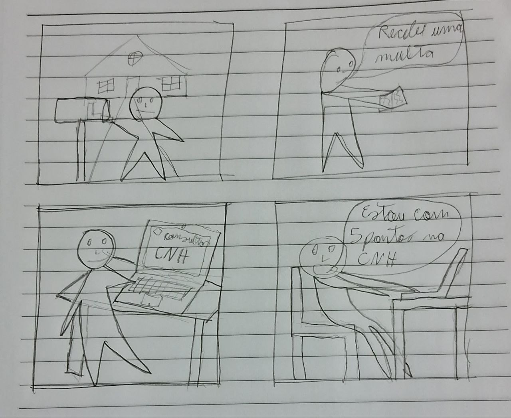
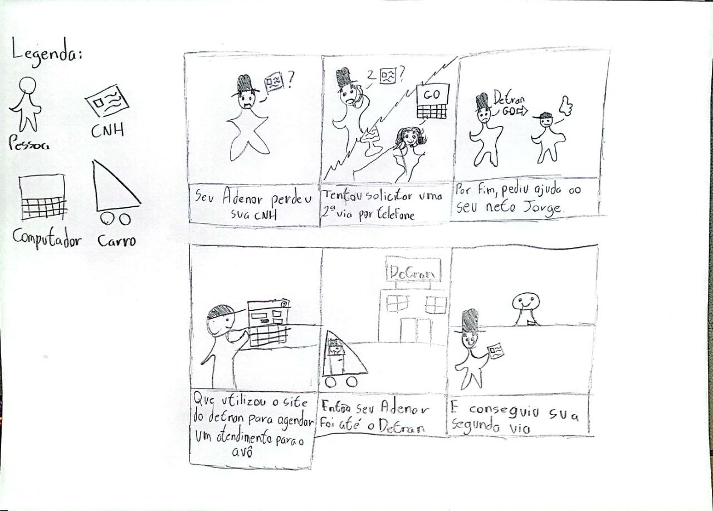
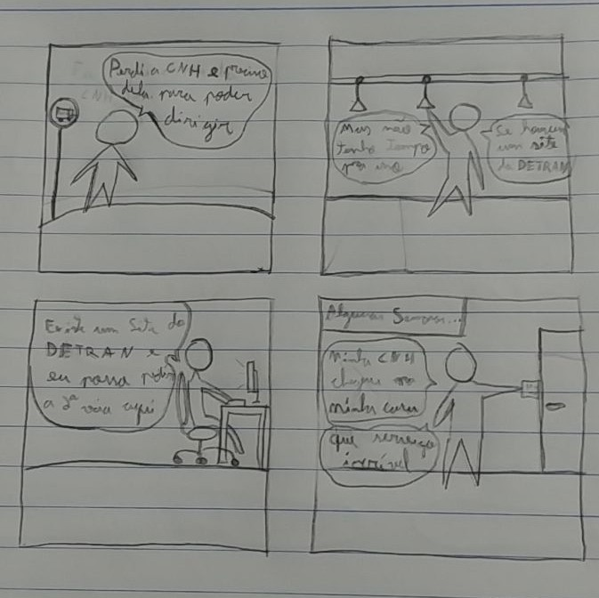
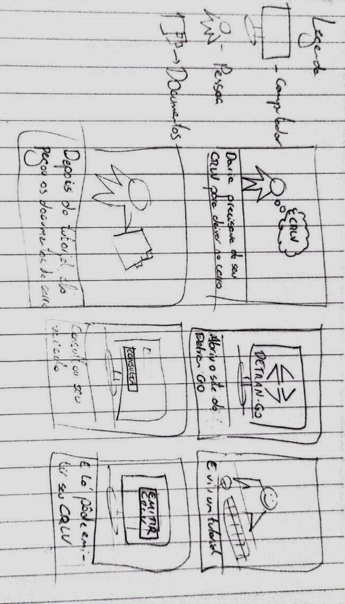
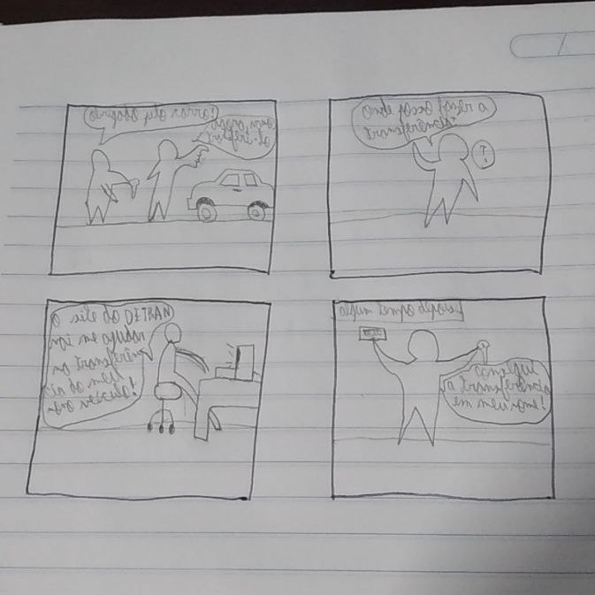

Storyboard - Relato de Resultados da Avaliação - Versão depreciada
1. Introdução
A criação de storyboards é uma técnica de prototipação de baixa fidelidade amplamente utilizada para a representação das tarefas realizadas pelos usuários no sistema. Busca auxiliar na comunicação entre a equipe de desenvolvimento e os stakeholders do projeto.[]
2. Objetivo
Este artefato tem o objetivo de relatar os resultados obtidos da avaliação dos storyboards, que foi realizada por meio de uma metodologia que segue o planejamento do relato que foi desenvolvido anteriormente.
A avaliação seguiu os objetivos que foram estabelecidos no planejamento da avaliação dos storyboards, buscando confirmar se:
- A fidelidade dos storyboards com a realidade é atendida.
- As necessidades dos usuários representados são satisfeitas.
- Existe a necessidade de alteração.
3. Metodologia
A metodologia utilizada pelo grupo foi a de entrevistas, na qual foi realizada de acordo com o planejamento dos storyboards..
3.1 Aspectos éticos
Sendo uma pesquisa com a participação de pessoas, a avaliação utilizou um termo de consentimento elaborado anteriormente e presente no artefato[1] correspondente, abaixo se encontra o mesmo.
Termo de Consentimento Livre e Esclarecido
Somos estudantes de Engenharia de software da Universidade de Brasília e estamos conduzindo uma pesquisa sobre o DetranGO, sitio da internet que busca oferecer serviços para a população do Goiás mas possui as mesmas funcionalidades do Detran de outros estados, como parte de nosso projeto na disciplina de Interação Humano Computador. Sua participação neste formulário é de caráter voluntário e todas as perguntas serão mantidas para fins acadêmicos e não serão compartilhados para terceiros.
Para decidir sobre o seu consentimento, é importante que você conheça as seguintes informações sobre a pesquisa:
- Nossa equipe tem o compromisso de divulgar os resultados de nossas pesquisas para o cliente.
- O consentimento para a participação na atividade é uma escolha livre, feita mediante a prestação de todos os esclarecimentos necessários sobre a pesquisa.
- A atividade pode ser interrompida a qualquer momento, segundo a sua disponibilidade e vontade.
- Será necessário gravar a atividade, e as gravações efetuadas serão divulgadas nos resultados do projeto.
- Os dados coletados durante a atividade destinam-se estritamente a atividades de análise e elaboração de melhorias para o sistema do DetranGO.
Diante das explicações, é necessário que você esteja de acordo com a pesquisa que será realizada e concorda de livre e espontânea vontade em participar, como colaborador? Caso o participante seja menor de idade é necessária a permissão do responsável legal.
( ) Sim, estou de acordo. ( ) Não estou de acordo.
4. Cronograma e participantes
4.1 Participantes
Na tabela 1 se encontram os participantes do teste piloto realizado.
| Atividade | Participante | Papel |
|---|---|---|
| Teste piloto | Felipe Mastromauro | Testador |
| Teste piloto | Pedro Muniz | Testador |
Tabela 1: Participantes do teste piloto realizado(Fonte: Autor).
Na tabela 2 se encontram os participantes da entrevista realizada.
| Atividade | Participante | Papel |
|---|---|---|
| Entrevista | Felipe Mastromauro | Entrevistador |
| Entrevista | Pedro Muniz | Relator |
| Entrevista | Leonardo Jesus | Entrevistado |
Tabela 2: Participantes da entrevista realizada(Fonte: Autor).
4.2 Cronograma
Na tabela 3 estão detalhados os cronogramas das atividades realizadas.
| Atividade | Local | Data | Horário |
|---|---|---|---|
| Teste piloto | Remoto (Google meet) | 26/05/2023 | 18:00 |
Tabela 3: Cronograma das atividades realizadas(Fonte: Autor).
5. Storyboards desenvolvidos
Abaixo estão representados os storyboards desenvolvidos pela equipe.

Figura 1 - Storyboard Consulta de CNH (Fonte: Carlos Eduardo, 2023)

Figura 2 - Storyboard Consulta de Veículo (Fonte: Amanda Noda, 2023)

Figura 3 - Storyboard Agendar atendimento (Fonte: Pedro Muniz, 2023)

Figura 4 - Storyboard Solicitar CNH (Fonte: João Morbeck, 2023)

Figura 5 - Storyboard Emissão de CRLV (Fonte: Felipe Mastromauro, 2023)

Figura 6 - Storyboard Transferência de Veículo (Fonte: Pedro Henrique, 2023)
6. Respostas das perguntas
Visando sumarizar os dados obtidos através da avaliação, as tabelas a seguir detalham as respostas do entrevistado para as perguntas elaboradas anteriormente, discriminadas por objetivo de avaliação. Para cada storyboard desenvolvido, foram feitas todas as perguntas elaboradas anteriormente.
6.1 Consulta de CNH
Abaixo se encontram as respostas do entrevistado para as perguntas acerca do storyboard de consulta de CNH.
6.1.1 Fidelidade dos storyboards com a realidade
| Número | Pergunta | Resposta |
|---|---|---|
| 1 | Quanto aos storyboards, você acha que eles estão condizentes com a realidade? | Sim |
| 2 | Por que este storyboard não condiz com a realidade? | - |
| 3 | Ficou clara a motivação do usuário para usar a aplicação do Detran GO? | Sim |
Tabela 4: Respostas para as perguntas elaboradas para o objetivo 1 do storyboard de consulta de CNH(Fonte: Autor, 2023).
6.1.2 Satisfação das necessidades do usuário
| Número | Pergunta | Resposta |
|---|---|---|
| 1 | A sequência de ações do storyboard fez sentido para você? | Sim |
| 2 | Você considera que o ator principal concluiu seu objetivo na história contada? | Sim |
Tabela 5: Respostas para as perguntas elaboradas para o objetivo 2 do storyboard de consulta de CNH(Fonte: Autor, 2023).
6.1.3 Necessidade de alteração
| Número | Pergunta | Resposta |
|---|---|---|
| 1 | Você tem algum ponto que acha que deveria ser alterado nas storyboards? | Hoje em dia, é muito difícil que se receba uma multa pelo correio |
Tabela 6: Respostas para as perguntas elaboradas para o objetivo 3 do storyboard de consulta de CNH(Fonte: Autor, 2023).
6.2 Consulta de veículo
Abaixo se encontram as respostas do entrevistado para as perguntas acerca do storyboard de consulta de veículo.
6.2.1 Fidelidade dos storyboards com a realidade
| Número | Pergunta | Resposta |
|---|---|---|
| 1 | Quanto aos storyboards, você acha que eles estão condizentes com a realidade? | Não |
| 2 | Por que este storyboard não condiz com a realidade? | Parcelas do carro não se consulta no detran, e sim com o financiamento bancário |
| 3 | Ficou clara a motivação do usuário para usar a aplicação do Detran GO? | Não |
Tabela 7: Respostas para as perguntas elaboradas para o objetivo 1 do storyboard de consulta de veículo(Fonte: Autor, 2023).
6.2.2 Satisfação das necessidades do usuário
| Número | Pergunta | Resposta |
|---|---|---|
| 1 | A sequência de ações do storyboard fez sentido para você? | Não |
| 2 | Você considera que o ator principal concluiu seu objetivo na história contada? | Não |
Tabela 8: Respostas para as perguntas elaboradas para o objetivo 2 do storyboard de consulta de veículo(Fonte: Autor, 2023).
6.2.3 Necessidade de alteração
| Número | Pergunta | Resposta |
|---|---|---|
| 1 | Você tem algum ponto que acha que deveria ser alterado nas storyboards? | O site do detran não possui as funções para consulta de dívidas, financiamento, etc... Apenas restrições, multas e impostos do veículo |
Tabela 9: Respostas para as perguntas elaboradas para o objetivo 3 do storyboard de consulta de veículo(Fonte: Autor, 2023).
6.3 Agendamento de atendimento
Abaixo se encontram as respostas do entrevistado para as perguntas acerca do storyboard de agendamento de atendimento.
6.3.1 Fidelidade dos storyboards com a realidade
| Número | Pergunta | Resposta |
|---|---|---|
| 1 | Quanto aos storyboards, você acha que eles estão condizentes com a realidade? | Sim |
| 2 | Por que este storyboard não condiz com a realidade? | - |
| 3 | Ficou clara a motivação do usuário para usar a aplicação do Detran GO? | Sim |
6.3.2 Satisfação das necessidades do usuário
| Número | Pergunta | Resposta |
|---|---|---|
| 1 | A sequência de ações do storyboard fez sentido para você? | Sim |
| 2 | Você considera que o ator principal concluiu seu objetivo na história contada? | Sim |
Tabela 11: Respostas para as perguntas elaboradas para o objetivo 2 do storyboard de agendamento de atendimento(Fonte: Autor, 2023).
6.3.3 Necessidade de alteração
| Número | Pergunta | Resposta |
|---|---|---|
| 1 | Você tem algum ponto que acha que deveria ser alterado nas storyboards? | Não |
Tabela 10: Respostas para as perguntas elaboradas para o objetivo 3 do storyboard de agendamento de atendimento(Fonte: Autor, 2023).
6.4 Solicitação de CNH
Abaixo se encontram as respostas do entrevistado para as perguntas acerca do storyboard de solicitação de CNH.
6.4.1 Fidelidade dos storyboards com a realidade
| Número | Pergunta | Resposta |
|---|---|---|
| 1 | Quanto aos storyboards, você acha que eles estão condizentes com a realidade? | Sim |
| 2 | Por que este storyboard não condiz com a realidade? | - |
| 3 | Ficou clara a motivação do usuário para usar a aplicação do Detran GO? | Sim |
Tabela 13: Respostas para as perguntas elaboradas para o objetivo 1 do storyboard de solicitação de CNH(Fonte: Autor, 2023).
6.4.2 Satisfação das necessidades do usuário
| Número | Pergunta | Resposta |
|---|---|---|
| 1 | A sequência de ações do storyboard fez sentido para você? | Sim |
| 2 | Você considera que o ator principal concluiu seu objetivo na história contada? | Sim |
Tabela 14: Respostas para as perguntas elaboradas para o objetivo 2 do storyboard de solicitação de CNH(Fonte: Autor, 2023).
6.4.3 Necessidade de alteração
| Número | Pergunta | Resposta |
|---|---|---|
| 1 | Você tem algum ponto que acha que deveria ser alterado nas storyboards? | Ambiguidade no ato de "perder a CNH" |
Tabela 15: Respostas para as perguntas elaboradas para o objetivo 3 do storyboard de solicitação de CNH(Fonte: Autor, 2023).
6.5 Emissão de CRLV
Abaixo se encontram as respostas do entrevistado para as perguntas acerca do storyboard de emissão de CRLV.
6.5.1 Fidelidade dos storyboards com a realidade
| Número | Pergunta | Resposta |
|---|---|---|
| 1 | Quanto aos storyboards, você acha que eles estão condizentes com a realidade? | Sim |
| 2 | Por que este storyboard não condiz com a realidade? | - |
| 3 | Ficou clara a motivação do usuário para usar a aplicação do Detran GO? | Sim |
Tabela 16: Respostas para as perguntas elaboradas para o objetivo 1 do storyboard de emissão de CRLV(Fonte: Autor, 2023).
6.5.2 Satisfação das necessidades do usuário
| Número | Pergunta | Resposta |
|---|---|---|
| 1 | A sequência de ações do storyboard fez sentido para você? | Sim |
| 2 | Você considera que o ator principal concluiu seu objetivo na história contada? | Sim |
Tabela 17: Respostas para as perguntas elaboradas para o objetivo 2 do storyboard de emissão de CRLV(Fonte: Autor, 2023).
6.5.3 Necessidade de alteração
| Número | Pergunta | Resposta |
|---|---|---|
| 1 | Você tem algum ponto que acha que deveria ser alterado nas storyboards? | Não |
Tabela 18: Respostas para as perguntas elaboradas para o objetivo 3 do storyboard de emissão de CRLV(Fonte: Autor, 2023).
6.6 Transferência de veículo
Abaixo se encontram as respostas do entrevistado para as perguntas acerca do storyboard de transferência de veículo.
6.6.1 Fidelidade dos storyboards com a realidade
| Número | Pergunta | Resposta |
|---|---|---|
| 1 | Quanto aos storyboards, você acha que eles estão condizentes com a realidade? | Sim |
| 2 | Por que este storyboard não condiz com a realidade? | - |
| 3 | Ficou clara a motivação do usuário para usar a aplicação do Detran GO? | Sim |
Tabela 19: Respostas para as perguntas elaboradas para o objetivo 1 do storyboard de transferência de veículo(Fonte: Autor, 2023).
6.6.2 Satisfação das necessidades do usuário
| Número | Pergunta | Resposta |
|---|---|---|
| 1 | A sequência de ações do storyboard fez sentido para você? | Sim |
| 2 | Você considera que o ator principal concluiu seu objetivo na história contada? | Sim |
Tabela 20: Respostas para as perguntas elaboradas para o objetivo 2 do storyboard de transferência de veículo(Fonte: Autor, 2023).
6.6.3 Necessidade de alteração
| Número | Pergunta | Resposta |
|---|---|---|
| 1 | Você tem algum ponto que acha que deveria ser alterado nas storyboards? | Não |
Tabela 21: Respostas para as perguntas elaboradas para o objetivo 3 do storyboard de transferência de veículo(Fonte: Autor, 2023).
7. Gravações
7.1 Teste piloto
No vídeo abaixo se encontra a gravação em vídeo do teste piloto realizado.
7.2 Entrevista
No vídeo abaixo se encontra a gravação em vídeo da entrevista realizada.
8. Análise dos dados coletados
Foram encontrados alguns pontos que deveriam ser mudados nos storyboards. Em geral temos que no storyboard de consultar CNH a indicação de que é díficil receber multas pelo correio. Já no de consultar veículo, foi passado que o site do Detran GO não apresenta certas funcionalidades que contribuem para a questão financeira do veículo. Por fim, na tarefa de solicitar CNH foi apontado a existência de ambiguidade no ato de "perder a CNH".
9. Correções possíveis
São necessárias correções quanto a funcionalidades erroneamente representadas, como no storyboard que representa a consulta de veículo, onde o usuário reclamou do fato de que a tarefa representada não é realizada no site do Detran, mas sim em outras páginas da web.
10. Conclusão
Após a análise dos dados, pode-se concluir que os objetivos da avaliação foram cumpridos, contudo os storyboards cumpriram parcialmente seus objetivos, falhando parcialmente em representar corretamente a realidade.
11. Bibliografia
[1] BARBOSA, Simone; DINIZ, Bruno. Interação Humano-Computador. Editora Elsevier, Rio de Janeiro, 2010.
12. Histórico de Versão
| Versão | Data | Descrição | Autor(es) | Revisor(es) |
|---|---|---|---|---|
1.0 |
25/05/23 | Criação do documento | Pedro H. e Carlos E. | Amanda N. |
1.1 |
29/05/23 | Adição de metodologia, teste piloto, relato e problemas encontrados | Pedro H. e Carlos E. | Amanda N. |
1.2 |
19/06/23 | Alterações de padronização | Pedro M. | Amanda N. |